實作一：第一週課程project
此project為把圖一的網站變成圖二形式的網站，Style the text and ake the image disappear 讓我初步操作目前教的內容
 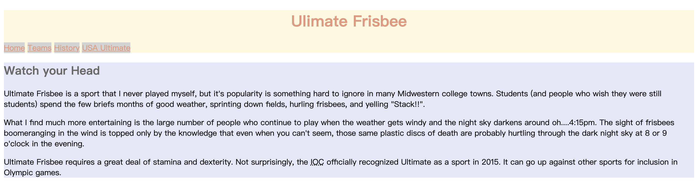
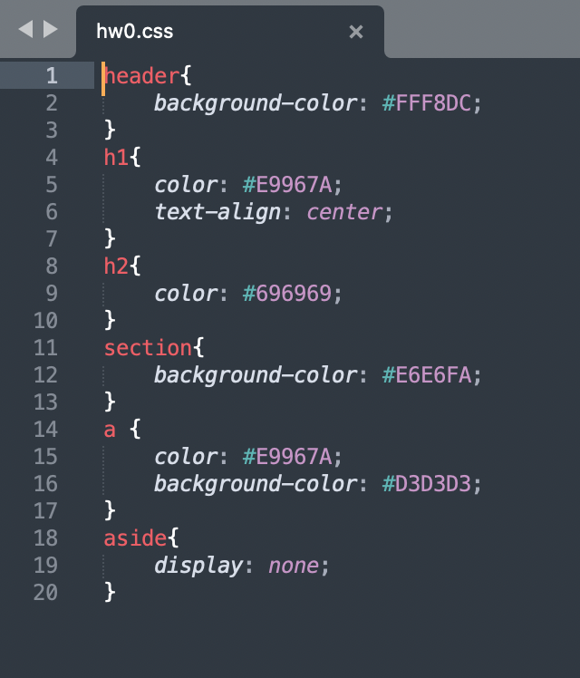
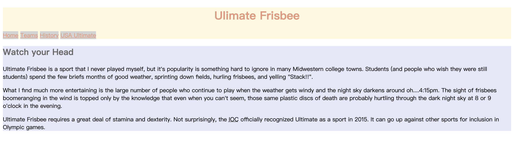
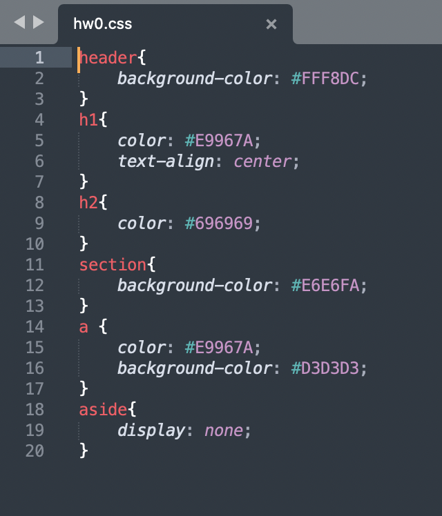
CSS (Cascading Stylesheets) 主要功能為讓網站中的內容
此project為把圖一的網站變成圖二形式的網站，Style the text and ake the image disappear 讓我初步操作目前教的內容
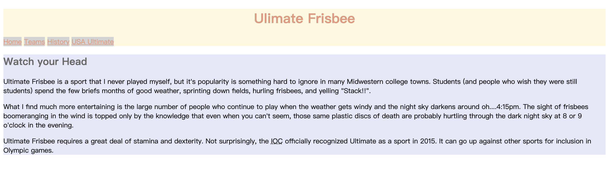
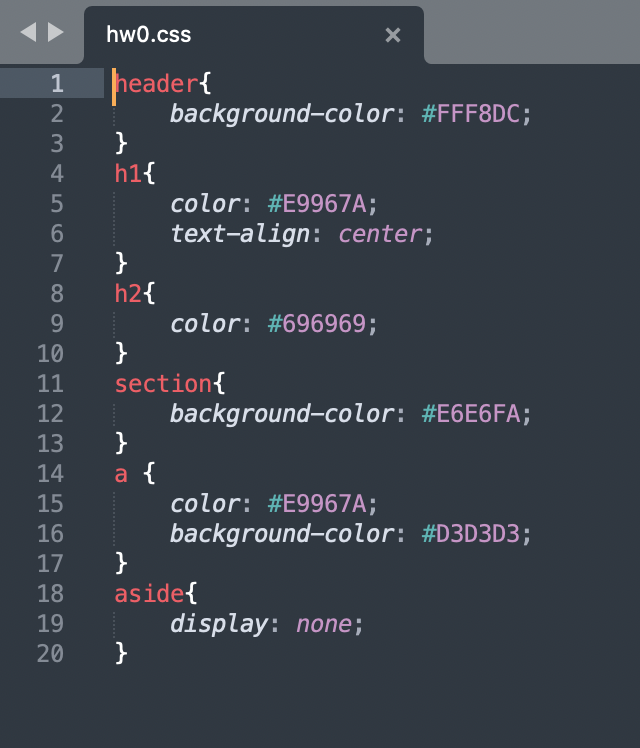
這個project的目標為把第一週的網站弄成下圖這樣，把圖片放到左邊，把link 弄整齊等，把網站重新整理，換成另一種樣貌，此實作一樣讓我們練習前面幾週教的功能與技巧
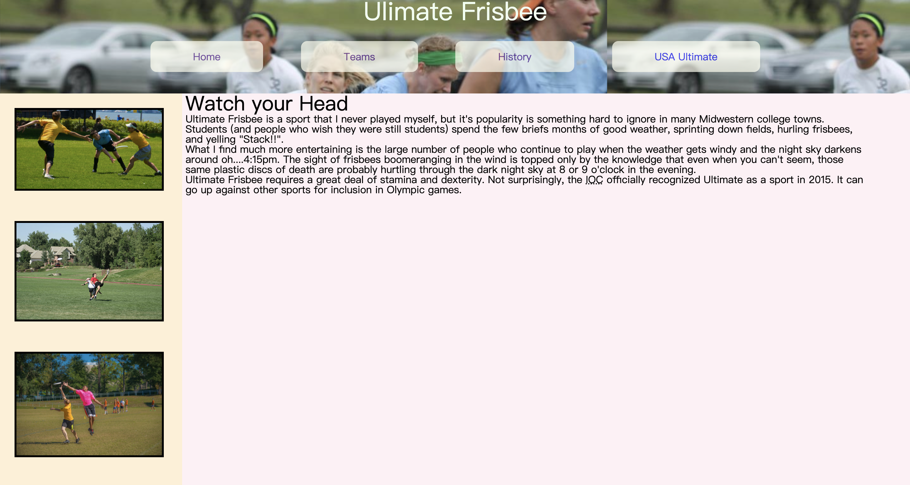 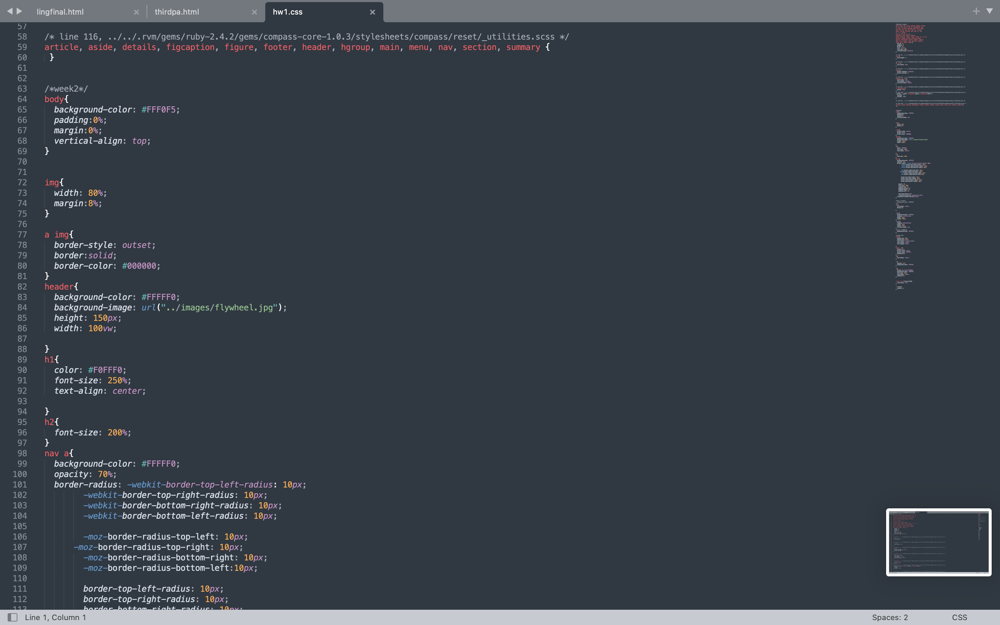
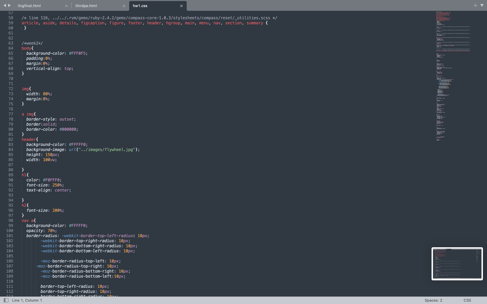

這個最後一個project是要美編第二週所美編的網站的Teams 那頁，確認我們對於這週教的美編表格程式的熟練度
 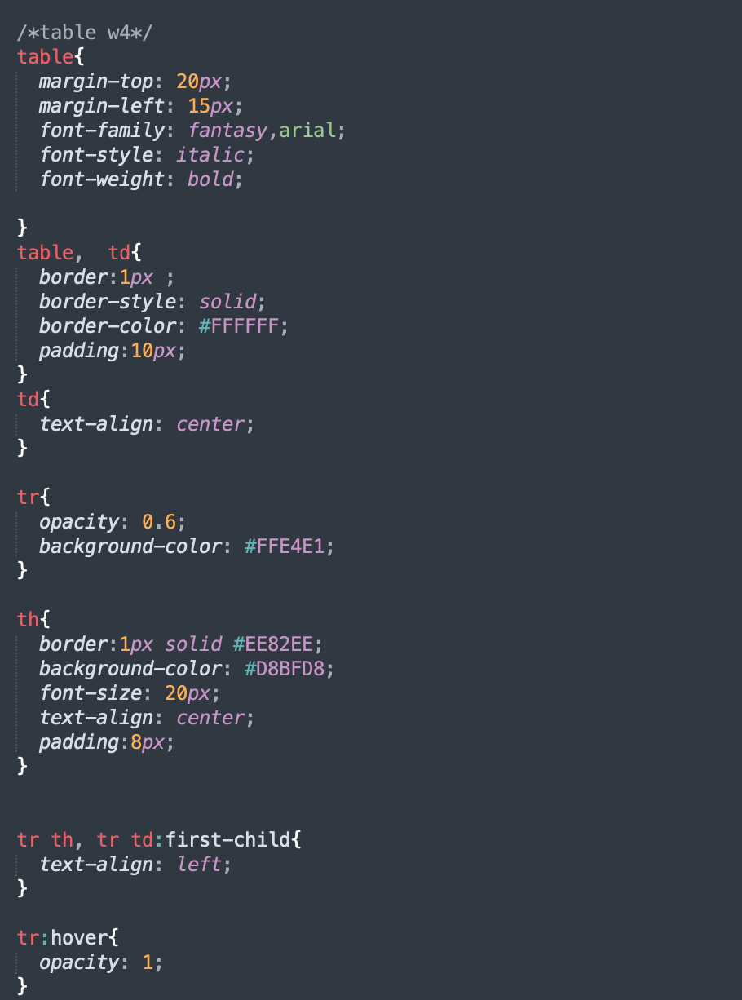
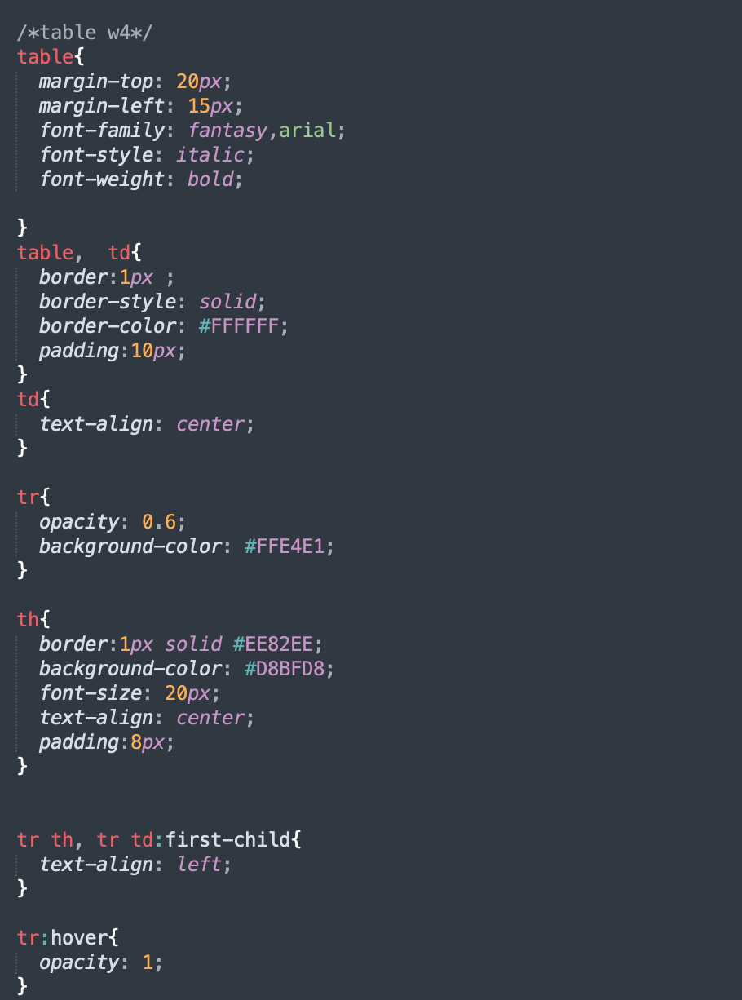
常常卡關 花很多時間思考 平常聽老師講很容易多做多累積經驗 讓東西待在同一個地方真的不容易